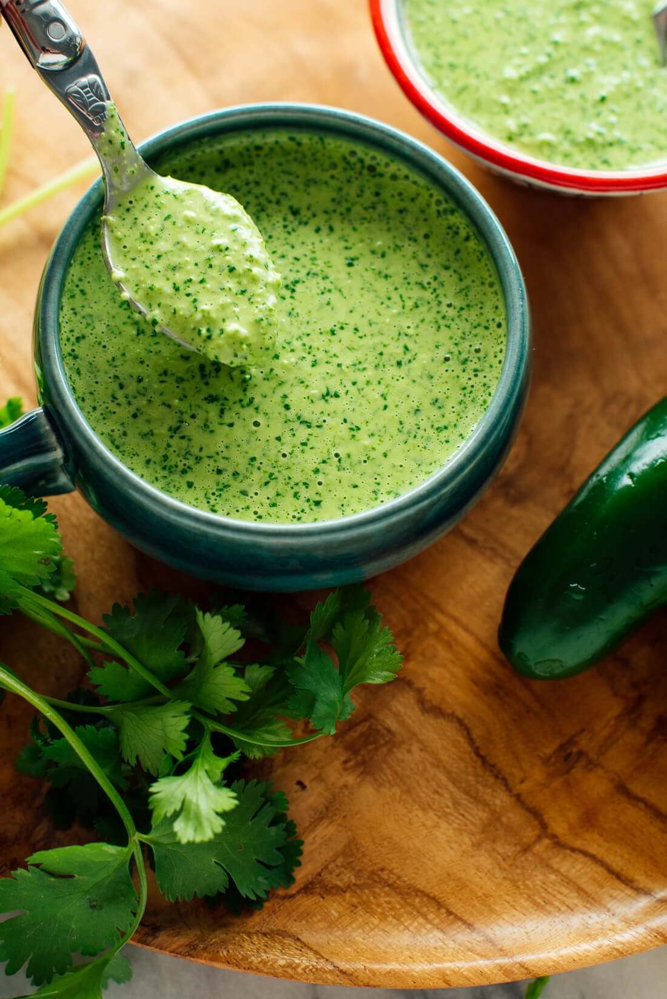

Aji Verde (Peruvian Green Sauce)

Description
Aji verde is a bold and bright Peruvian green sauce. It is spicy and tangy, and packed with fresh flavor.
Ingredients
- 1/2 cup mayonnaise
- 2 cups lightly packed fresh cilantro (mostly leaves)
- 2 medium jalapenos, roughly chopped
- 2 garlic cloves, roughly chopped
- 1/3 cup grated Cotija or Parmesan cheese
- 1 tablespoon lime juice
- salt to taste
Instructions
- In a food processor or blender, combine all of the ingredients until the cilantro is broken into tiny pieces and sauce is green and smooth.
- Taste and adjust if necessary.
- Aji verde keeps well in the fridge, covered, for about 1 week.
Credit: Cookie + kate